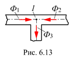
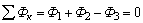

6.2.6.2. Первый закон Кирхгофа
В разветвленных магнитных цепях имеется несколько замкнутых контуров и соответственно магнитных потоков. Для составления системы уравнений по законам Кирхгофа нужно знать направления токов в катушках, а также выбрать условные положительные направления магнитных потоков.
Запишем первый закон Кирхгофа для условного узла 1 магнитной цепи (рис . 6.13):
| , | (6.10) |
т. е. алгебраическая сумма магнитных потоков в узле разветвления равна нулю.
Под условным узлом разветвления магнитной цепи подразумевается точка, в которой сходятся три или большее число средних линий магнитной индукции.